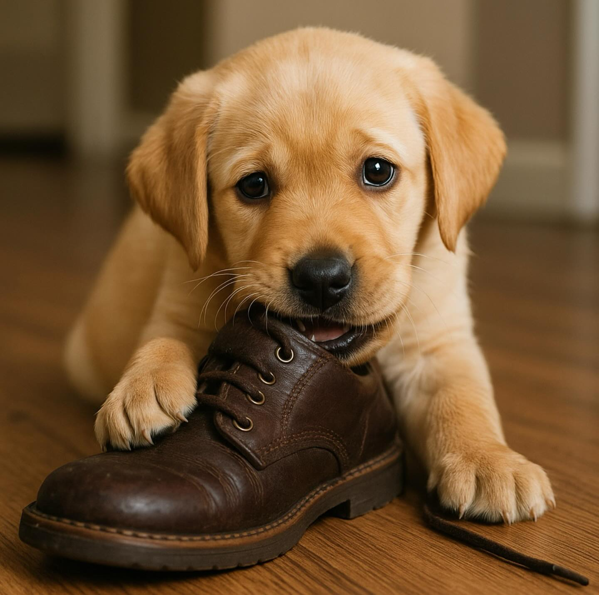

Episode 36 · April 17, 2025 · 2741
Dog Training Questions Answered For a Listener. Retrieving, Chewing and Obedience Questions Addressed.

About This Episode
In this episode we resoond to some emailed dog training questions that a listener sent it. We try to problem solve, "why his puppy stopped retrieving?" Chewing on things and how to work with a puppy when it comes to obedience training. Hope you all enjoy and thanks for listening!
Questions about the training topics in this episode? Tyce works with bird dog owners and hunters through Utah Bird Dog Training. Reach out to work with him directly.
Resources & Links
- Kuranda Dog Beds — Elevated, chew-proof dog beds.
- Utah Bird Dog Training — Tyce's professional training services.
Transcript
Full transcript for Episode 36: Dog Training Questions Answered For a Listener. Retrieving, Chewing and Obedience Questions Addressed..
Tyce
Hey everyone, welcome to the Bird Dog Podcast. My name is Tyce. Today I want to answer a detailed email I got from a listener named Jesse Mendoza. Jesse, thanks for writing in and sorry for the delay getting back to you. Jesse has a four-month-old Labrador retriever — his first puppy — and has some questions about chewing, destructive behavior, and mental stimulation. Let's work through it.
Jesse's puppy is tearing things up — socks, towels, a blanket that got pulled through the wire of the crate. He wants to know how to handle this and what he should be giving the dog instead. First thing I'll say: a four-month-old puppy is going through a teeth transition. Between four and five months the adult teeth are coming in. Gums can be sore, and puppies chew because it helps with that discomfort. This is normal and expected behavior at this age — it's not a character flaw in the dog. It's just a developmental stage that you manage rather than fight.
The management piece is straightforward: don't put things in the crate that the dog can destroy. Fabric items — blankets, towels, socks — are exactly the wrong choice because a motivated chewer will tear them into pieces. And those pieces can get swallowed. Fabric pieces, soft toy stuffing, rope strands, rawhide chunks — when ingested they can create an intestinal blockage, which can be fatal or require expensive emergency surgery. When in doubt, if the dog can break it apart, it doesn't go in the crate unsupervised.
What does go in the crate: a Kong rubber toy (stuff it with something if you want), an antler, a hard rubber bone, a pressed rawhide that he can work on but not break chunks off of. Something the dog can gnaw without being able to destroy it. Kongs are great for puppies because they're nearly indestructible and you can make them more interesting by filling them with peanut butter and freezing them — keeps the dog busy and calm.
On mental stimulation: bird dog puppies have a lot of mental energy, not just physical energy. Simple obedience work — sit, stay, come — is mentally tiring for a young dog even in short sessions. Five to ten minutes of training in the morning, another five minutes in the evening. You're not drilling the dog, you're just engaging its brain. Add some light retrieving if the drive is there (keep sessions short, two to four throws, stop while the puppy still wants more). For a puppy that's itching to use its nose, you can hide bumpers or even a smelly bird in the yard and let the dog work to find them. You don't need a complex setup — just engage the brain every day.
One more note on the shaking behavior Jesse described — dog grabs something and shakes it violently. That's a natural prey drive expression. The dog is acting like it would with something alive — shake to dislodge or disable. It's not inherently a problem. On birds you want it extinguished and replaced with a clean hold and carry, which is part of what force fetch addresses later. For now, with a four-month-old, just make sure the dog isn't shaking things that could injure it or break apart and become a swallowing hazard. If the behavior shows up on birds, redirect to hold work early. Thanks for writing in, Jesse. If anyone else has training questions, you can reach us at thebirddogpodcast@gmail.com. Thanks for listening.
About the Host
Tyce Erickson
Tyce Erickson is a professional bird dog trainer and the owner of Utah Bird Dog Training in Utah. For nearly two decades he has worked with pointing dogs, retrievers, and family hunting dogs — helping owners build dogs that are capable and enjoyable in the field. The Bird Dog Podcast is an extension of that work: honest conversations on training, hunting, breeding, and everything that goes into a life spent working dogs.
More About Tyce